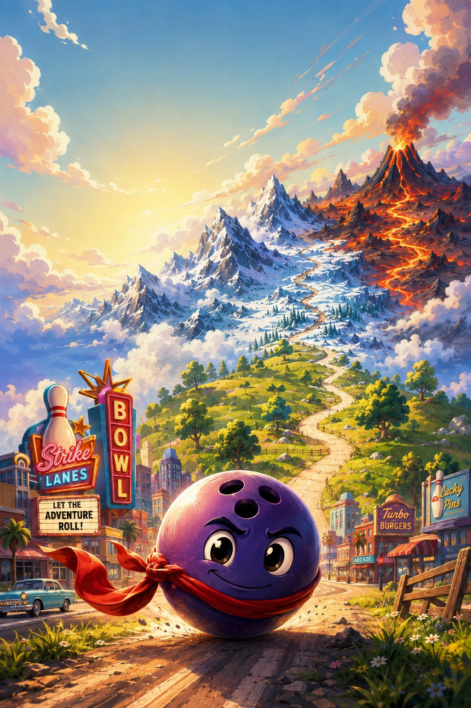

🔊
🔄
Gira el móvil en vertical
ABISMO
2.0 · REMAKE 3D

Diestro
Zurdo
Deslizar
▶ TOCA PARA JUGAR
⚙️
Controles
Elige cómo mover y saltar
Diestro
Joystick izquierda · saltar derecha
Zurdo
Saltar izquierda · joystick derecha
Deslizar + tocar
Desliza para mover · toca para saltar
Seguir
Tu navegador no puede con el 3D 😢
Prueba a actualizarlo o juega al ABISMO clásico.